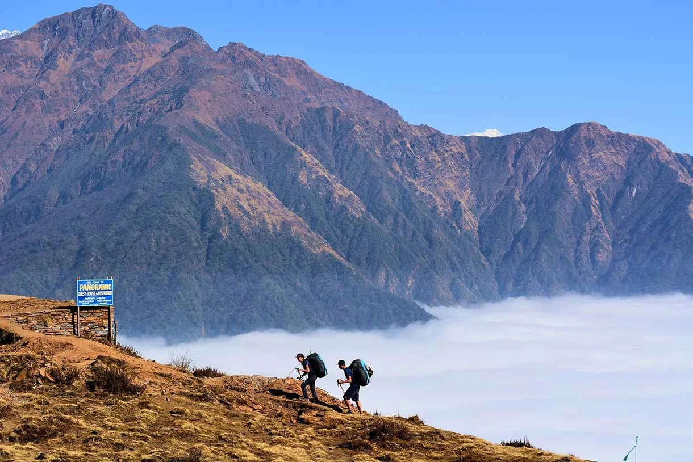
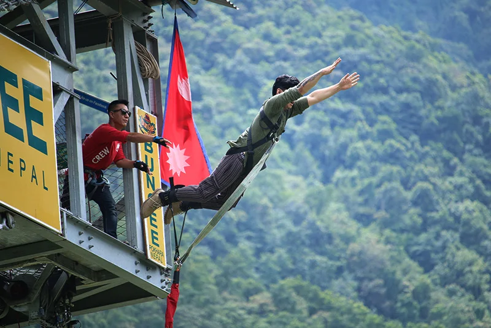
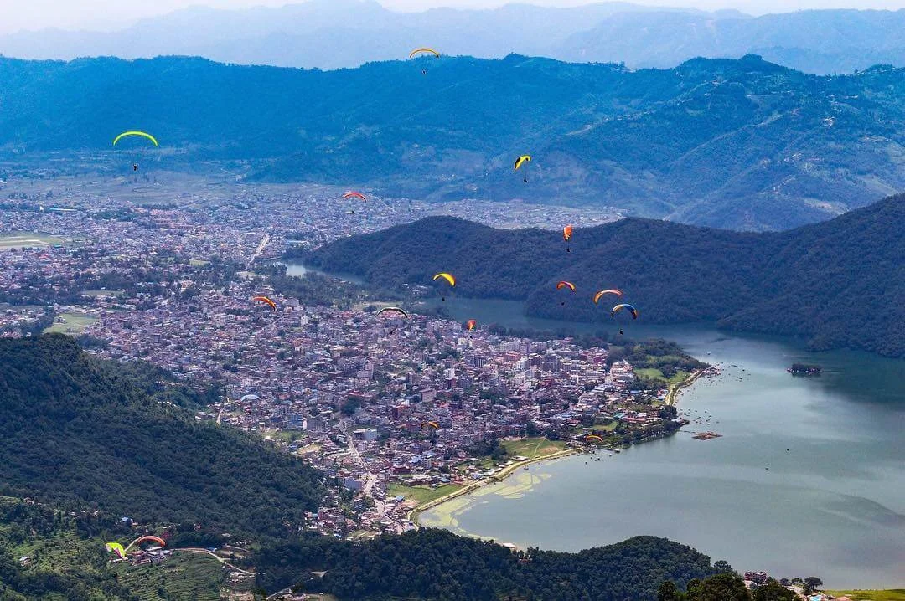
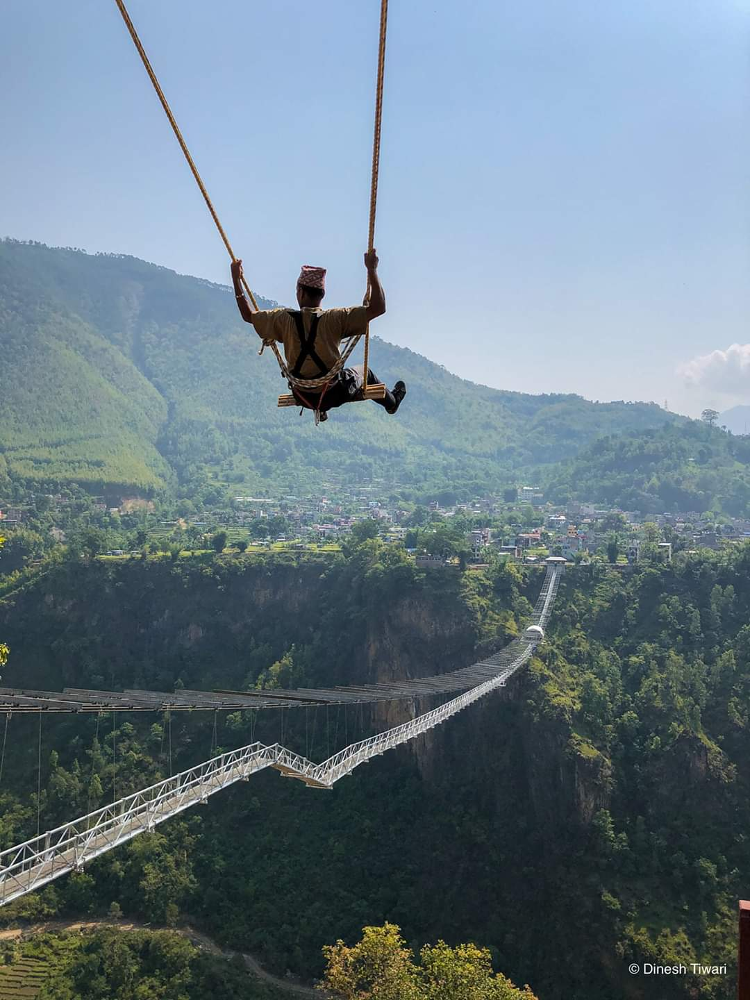
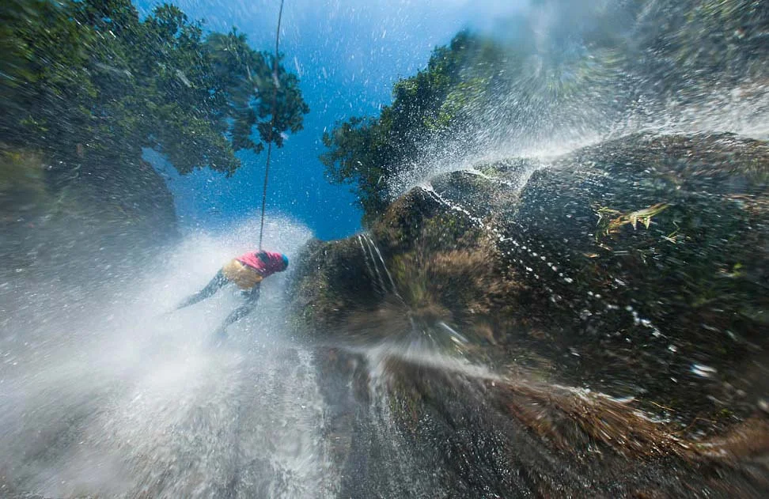
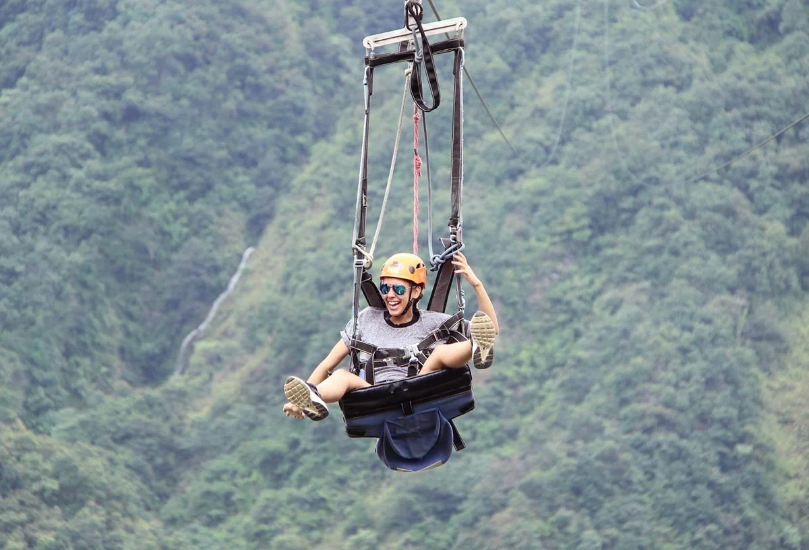
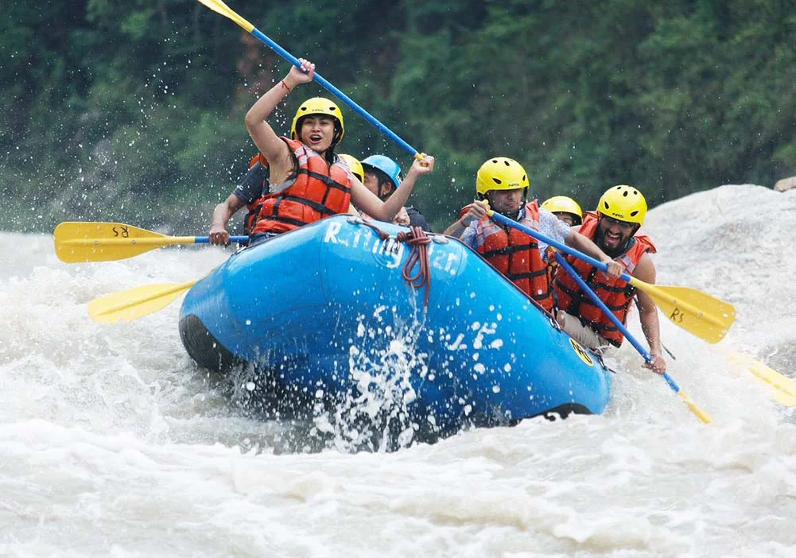
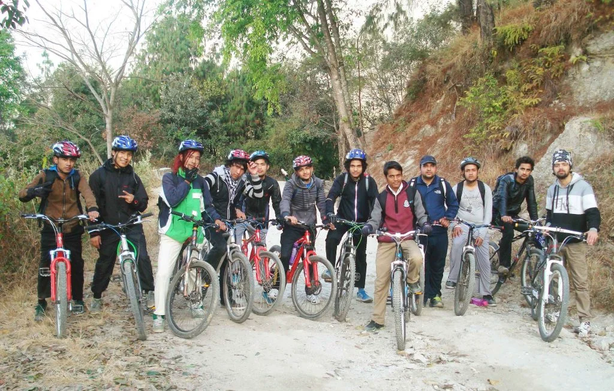
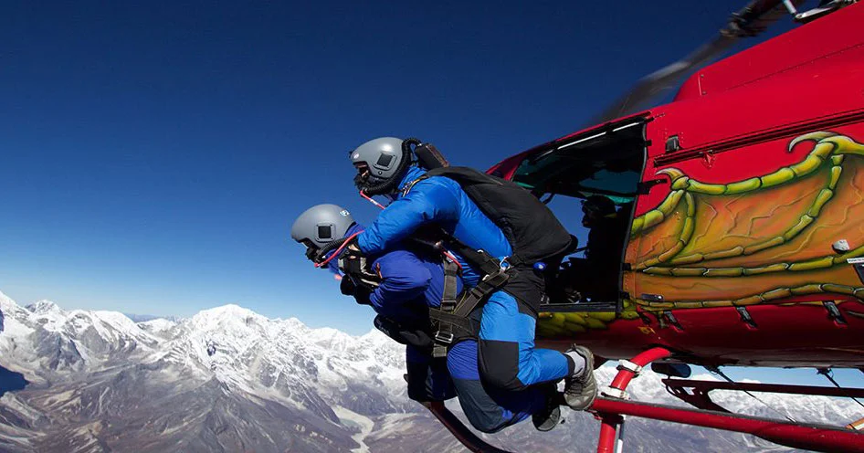
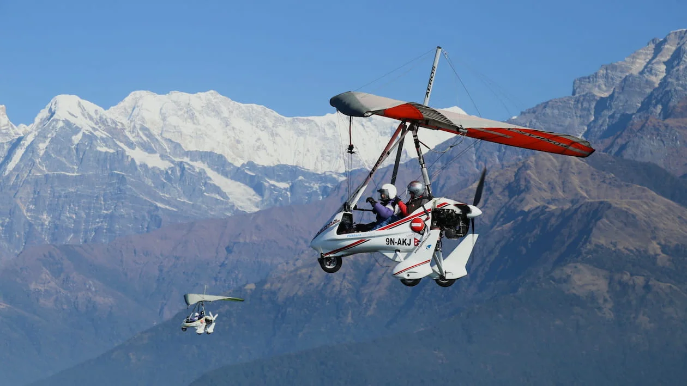

10 Most Popular Adventure Activities in Nepal
Trekking in Nepal
Trekking in Nepal is a popular tourist activity and enjoy some of the famous destinations for trekking are Everest Base Camp, Annapurna Base Camp, Langtang Valley, etc.Trekking is one of the best ways to explore the rural side of Nepal. If you are planning to trek then you can read our beginner’s guide to trekking in Nepal.The best times to visit Nepal for trekking are during the autumn season (September-November), the spring season (March-May), and the winter season (December-February).Autumn is the peak season all over Nepal i.e. Trekking in Nepal is at its best during late September.
Bungee Jumping in Kusma, Bhotekoshi, Pokhara
Bungee Jumping in Nepal is one of the top adventure activities mostly loved by young and adult people. It is an exciting, thrilling experience and you are absolutely going to love the freefall.Mainly there are 3 places for bungy jumping in Nepal. One is at Parbat, Kusma, another at Bhotekoshi, and other at Pokhara.Among 3 bungees in Nepal, Kusma is the world’s second-highest bungee spot. Kusma Bungee has a height of 228 meters. The height of Bungy at Bhotekoshi is 160 meters and Pokhara bungee has a height of 70 meters.
Paragliding in Pokhara
Paragliding in Pokhara offers a great way to experience the scenic view of the Himalayas. You will love the unsurpassed view of the Phewa lake, towering mountains, and the whole Pokhara city.Pokhara’s paragliding offers both tandem flights i.e. you will be with a pilot. The paragliding starts from sarangkot and you can enjoy the both short and long duration of the flight.
Swing at Kusma & Pokhara
Apart from the world’s second-highest bungee jumping, enjoy the world’s highest swing located at Parbat, Kusma.The swing is operated by The Cliff Nepal and the height is 748 feet i.e 228 meters. The Cliff Nepal offers both single and tandem swing.Moreover, Highground Nepal too offers a swing at Pokhara. You can enjoy this adventurous ride with your friends or family and the rate is different for swing in Pokhara and Kusma.
Canyoning in Bhotekoshi
Nepal offers some of the most exciting adventure trips in the world including trekking, bungee, paragliding, etc. But one of the toughest adventure sport is hardly mentioned i.e. canyoning. Canyoning is the best way to enjoy the adrenaline-filled trip and you can do that in Bhotekoshi. The Last Resort runs the canyoning and it is the idea of jumping from a height and sliding down from a waterfall is something everyone can enjoy.
Zip Flyer at Pokhara & Dhulikhel
Apart from Bungee Jumping and Swing, Highground Nepal offers Zip Flyer which is another adventurous activity you can do in Pokhara, Nepal.Enjoy the world’s steepest, fastest, and longest Zipline inclined at 56 degrees with a total length of 1800 meters. If you are in Kathmandu and want to enjoy the zip line then you can visit the nearest location i.e. Dhulikhel. They do have different packages like classic, superman, couple and the price varies for these packages.
White Water Rafting at Bhotekoshi
Want to experience the White Water Rafting at Bhotekoshi? Make a group and call us to book your ticket to enjoy the world’s best white water rafting. Rafting is the most popular water sport in Nepal and it is an excellent way to fulfill your adventurous thirst.
Mountain Biking in Pokhara & Kathmandu
With world-class trails, enjoy and experience mountain biking in Kathmandu and Pokhara. Grab your helmet, pick your bike and explore the stunning mountain and track with the local and international community.
Skydiving from Everest Region
Do you dream of flying like a bird? Here is your chance, prepare for skydiving in Nepal. It is an ultimate experience to makes you feel like you are on top of the world.Skydiving is one of the newest adventure sports compared to other adventurous things to do in Nepal.There are mainly two places for Skydiving, one is from Pokhara and another from Everest. The drop point for skydiving at Everest is either Gorak Shep or Kala Pathar.
Ultralight Flight in Pokhara
Want to enjoy the mountain view from Pokhara? Yes, you can fly over the mountains like Annapurna, Machhapuchchhre, etc with Ultralight flight service. You can book the flight durations from 15, 30, 60 to 90 minutes and the cost vary according to the time.
